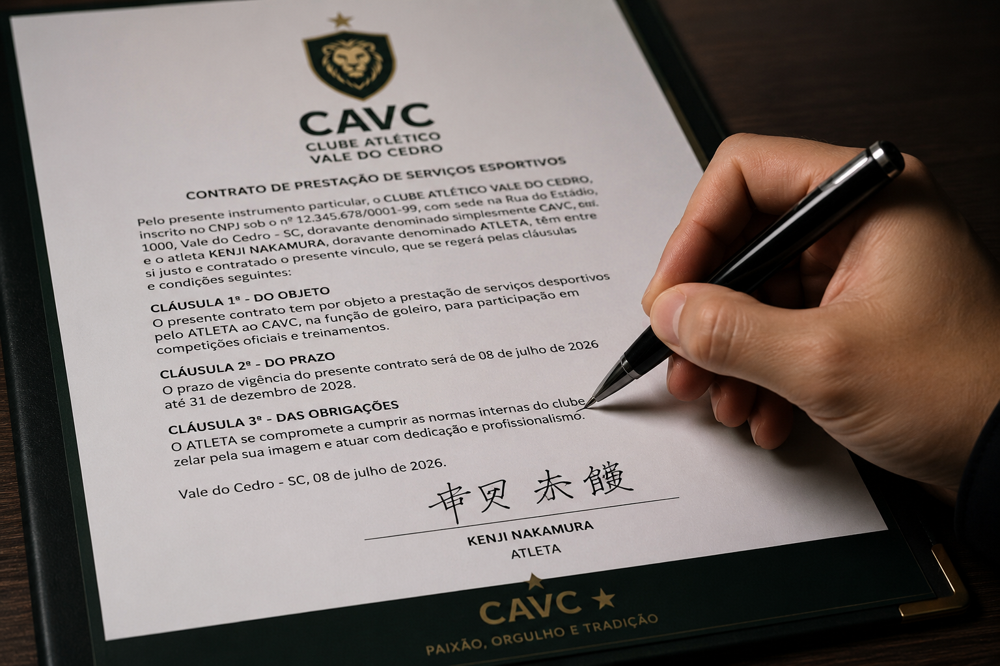
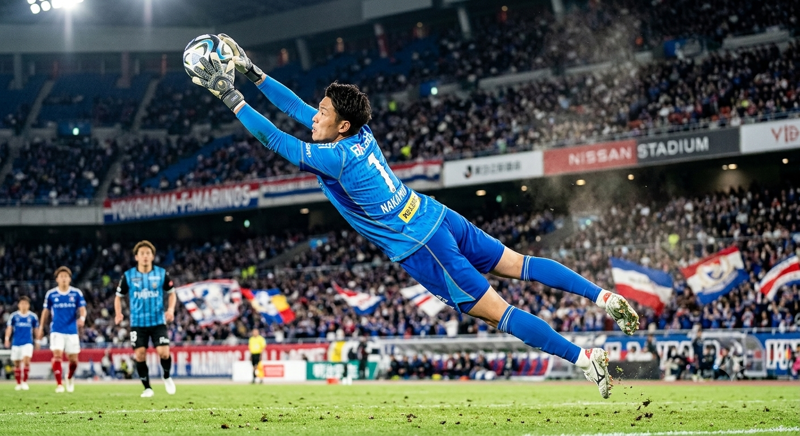

Números do atleta

O Clube Atlético Vale do Cedro confirmou oficialmente nesta terça-feira a contratação do goleiro japonês Kenji Nakamura, de 24 anos.
A assinatura do contrato aconteceu na sede administrativa do clube e contou com a presença do presidente Rodrigo Andrade e do empresário do atleta.
O vínculo é válido até dezembro de 2028 e faz parte do planejamento esportivo da diretoria para fortalecer o elenco profissional nas próximas temporadas.

Do Japão ao Vale do Cedro
Nascido em Osaka, no Japão, Kenji Nakamura iniciou sua trajetória no futebol ainda nas categorias de base, onde rapidamente chamou atenção pela disciplina e evolução técnica como goleiro.
Aos 18 anos, passou a integrar equipes profissionais japonesas, construindo uma carreira marcada por atuações seguras, grande capacidade de reação e liderança dentro de campo.
Após temporadas de destaque no futebol japonês, o goleiro aceitou o desafio de atuar no Brasil e chega ao Clube Atlético Vale do Cedro com o objetivo de ajudar o clube na busca por títulos e novas conquistas.
"O futebol brasileiro sempre foi uma referência para mim. Estou muito feliz por vestir essa camisa e quero retribuir a confiança dentro de campo." — Kenji Nakamura
Após a apresentação oficial, o goleiro iniciou os primeiros trabalhos no Centro de Treinamento José Carvalho, onde conheceu seus novos companheiros e participou das atividades de integração.